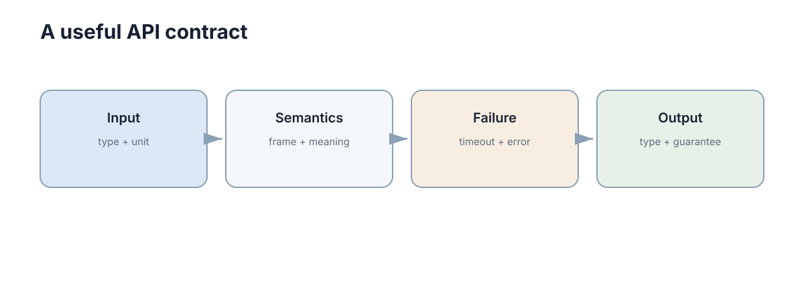

Modular Design & APIs
架构确定了“大块怎么分”，API 决定这些模块怎样合作而不互相侵入内部实现。好的接口不是函数越多越好，而是让调用者只依赖必要信息。
接口的本质是一份跨边界的承诺：我对你承诺输入什么形状、输出什么含义、失败时怎么表达。承诺一旦发布，改动成本就不再由你一个人承担，而是由所有调用者共同承担。因此接口设计的核心问题不是“怎样写更优雅”，而是“怎样让未来的变化不破坏别人”。这也是为什么本文会花大量篇幅讨论错误语义、版本演进和幂等性——它们看起来不如“框架选型”吸引人，但决定了系统能否长期演进。
下面先建立契约的基本形状，再走一遍请求如何进入业务逻辑，接着讨论 REST 的最小必要知识，最后深入三个常被忽略但代价极高的部分：版本演进、幂等性、错误分类。

先把模块边界写成契约
接口可以理解成一份契约：调用者提供什么，服务承诺返回什么，失败时怎样表达。
一份完整契约应该包含五类信息：操作语义（这个接口做什么，不做什么）、请求结构（字段名、类型、必填性、单位）、响应结构（成功时返回什么）、失败语义（哪些错误码、各自含义）、约束条件（限流、超时、幂等性、并发限制）。日常开发中最常被漏掉的是后两类，而它们恰恰是线上事故的主要来源。
例如创建任务：
POST /tasks
input : {target_x, target_y}
output: {task_id, status}
errors: 400 / 409 / 503
这比“调用 create_task()”更完整，因为它同时说明了数据结构和失败语义。
契约的写法可以很轻量，但内容必须完整。哪怕只是团队内部接口，也值得把上面五项写下来——写的过程往往就能发现设计漏洞，比如“409 和 400 的区别到底是什么”“目标点重复提交算不算冲突”。
代码内部也应保持同样原则：
def plan(start, goal) -> list[tuple[float, float]]:
"""Return a path from start to goal, or raise NoPathError."""
调用者不应该依赖规划器内部用了 A、Dijkstra 还是其他算法。判断一个接口是否合格，可以用“替换测试*”：如果明天换一套完全不同的实现，调用方代码是否一行都不用改？如果不能，说明契约里泄漏了实现细节。
| 契约要素 | 要回答的问题 | 缺了会怎样 |
|---|---|---|
| 操作语义 | 做什么，不做什么 | 调用者误用边界，责任不清 |
| 请求结构 | 字段、类型、单位、必填 | 集成时才发现字段对不上 |
| 响应结构 | 成功返回什么 | 调用者解析逻辑各写一套 |
| 失败语义 | 错误码含义与分类 | 无法区分该重试还是该上报 |
| 约束条件 | 限流、超时、幂等 | 重试造成重复写入 |
一个 HTTP 请求怎样进入业务逻辑
常见的后端流程可以压缩成：
Request → Validation → Service → Repository/External System → Response
路由层只负责协议相关工作；业务判断放在 Service；数据访问放在 Repository 或 Adapter。这样测试业务规则时不需要真的启动 HTTP 服务器。
这条链路之所以值得单独讲，是因为越界最常见的位置就在路由层。当路由里开始出现 if status == "running" and robot.battery > 20，业务规则就已经泄漏进协议层了；接下来所有其他入口（后台任务、定时器、内部调用）都要重复写一遍同样的判断，且它们会逐渐不一致。
def create_task(payload, service):
if "goal" not in payload:
return {"error": "goal required"}, 400
task = service.create(payload["goal"])
return task, 201
重点不是某个 Web 框架，而是协议层不要吞掉业务层。上面的路由只做两件事：校验输入形状、把结果翻译成状态码。所有业务判断都交给了 service。
这个边界还带来可测试性的直接收益。业务规则可以在不启动服务器、不连数据库的情况下被快速测试；协议层则可以用少量测试覆盖状态码映射与字段校验。如果两者混在一起，测试就只能通过发 HTTP 请求来做，速度慢、失败定位也困难。
一个健康的判断标准是：路由层应该薄到可以一眼看完。当某个路由函数超过几十行、出现多层嵌套判断或直接拼 SQL，几乎可以确定业务逻辑已经错位，应该被搬进 Service。
REST 只需要先掌握资源和状态码
REST 的入门重点只有三个：
- URL 表示资源，例如
/tasks/42； - HTTP 方法表达常见操作，例如 GET/POST/PATCH/DELETE；
- 状态码清楚表达结果，例如 200、201、400、404、409、500。
把这三件事做好，接口就已经比大多数“能跑”的实现清晰得多。真正的 REST 成熟度模型（HATEOAS 之类）可以先放一放，因为它们的收益远小于“不要把所有动作塞进 URL”。
不要把动作全塞进 URL：
不推荐: POST /doCreateTask
更清楚: POST /tasks
这不是风格洁癖。资源化的 URL 让对方能推测接口结构（/tasks/42 存在就意味着有单资源获取），而动作式 URL 只能靠文档记忆；一旦接口数量到几十个，这个差异会变成实实在在的沟通成本。
| 方法 | 语义 | 幂等 | 典型状态码 |
|---|---|---|---|
| GET | 读取资源 | 是 | 200 / 404 |
| POST | 创建或提交 | 否 | 201 / 400 / 409 |
| PUT | 整体替换 | 是 | 200 / 204 |
| PATCH | 局部修改 | 否（通常） | 200 / 409 |
| DELETE | 删除资源 | 是 | 204 / 404 |
也不要为了“RESTful”强行把所有系统设计成 HTTP。进程内函数调用、ROS2 topic/service/action、消息队列和 RPC 都是接口形式，选择取决于通信语义。控制指令要求低延迟、高频、允许丢弃最新消息时，ROS2 topic 往往比 HTTP 更合适；要求“一定送达且只执行一次”时，才需要消息队列或带幂等的 HTTP 接口。
换句话说，先问语义，再问形式。语义说清楚了，形式选择常常只剩一两个合理选项；反之，先定了 HTTP，再去硬凑语义，就会造出语义混乱的接口。
契约的版本演进策略
接口发布之后，唯一确定的事就是它会变。问题不是“要不要变”，而是“怎样变才不破坏调用方”。核心原则只有一条：新增是兼容的，修改语义是不兼容的。围绕这条原则，可以归纳出几类标准处理方式。
新增可选字段是最安全的演进方式：老调用方不传它，行为与之前一致；新调用方传它，获得新能力。真正危险的是删除字段和改语义——前者让老调用方读取到空值，后者更隐蔽，字段名没变但含义变了，调用方会得到“格式正确但逻辑错误”的结果。
删除字段的正确做法是两步走：第一步把字段标记为 deprecated 并在文档与响应中提示（例如加 _deprecated 前缀或响应头），同时确保服务端仍然填充它；第二步在弃用窗口结束后再真正移除。跳过第一步直接删除，等于把所有调用方同时推到未测试的路径上。
| 变更类型 | 兼容性 | 处理方式 | 弃用周期 |
|---|---|---|---|
| 新增可选字段 | 兼容 | 直接发布，文档标注 | 无 |
| 新增必填字段 | 不兼容 | 给默认值后再改为必填 | ≥ 2 个大版本 |
| 删除字段 | 不兼容 | 先标 deprecated，再两步移除 | 3–6 个月 |
| 改字段类型/单位 | 不兼容 | 新增字段，旧字段并存 | 3–6 个月 |
| 改字段语义 | 不兼容 | 必须发新版本 | 无（不能渐进） |
| 新增错误码 | 基本兼容 | 调用方需能容错未知码 | 无 |
| 改默认行为 | 不兼容 | 用显式参数替代隐式默认 | ≥ 1 个大版本 |
版本号的放置位置也有讲究。URL 版本（/v1/tasks）实现简单、缓存友好、可见性高；头部版本（Accept: application/vnd.api.v2+json）更符合理论，但调试和日志里不易察觉。对小团队与科研项目，URL 版本通常更实用，因为出错时一眼就能看出调用的是哪一版。
最后一条经验：能不升版本就不升。每多一个并行版本，就要多维护一套测试、多一份兼容逻辑、多一批需要同步修改的客户端。能用兼容新增解决的问题，就不要用版本分裂来解决。真正的版本分裂应该留给出语义变更——那种无论如何都无法兼容的情况下。
错误也是接口的一部分
最难维护的接口往往不是成功返回，而是每次失败都长得不一样。
失败路径之所以容易失控，是因为它在开发阶段最不显眼：正常情况下不执行，测试里常常被跳过，文档里通常不写。等到依赖它的重试、告警、用户提示都上线之后，才发现每个接口的失败结构都不一样，客户端只能靠字符串匹配猜错误类型。
建议统一错误结构：
{
"code": "TASK_CONFLICT",
"message": "robot already has an active task"
}
程序依赖稳定的 code，人阅读 message。同时要区分：
- 输入错误：调用者可以修改请求；
- 业务冲突：请求本身合法，但当前状态不允许；
- 系统故障：数据库、网络或外部服务异常。
这种区分直接影响重试策略和故障定位。判据其实很清晰：重试同一个请求，结果会不会变？ 输入错误重试一万次还是失败，说明这是调用方要改的东西；系统故障重试可能成功，说明这是基础设施的问题；业务冲突重试可能在下一次状态变化后成功，所以需要明确的退避与放弃策略。
建议再加一层：让错误结构携带是否可重试和是否安全重试的信息。例如 retryable: true 表示可以用指数退避重试，retry_after 表示最早何时重试。把这些显式表达出来，调用方就不必根据状态码自己猜测——而每一次猜测都是一处潜在的实现分歧。
错误分类与错误码设计
4xx 与 5xx 的分界线是责任归属，不是严重程度。4xx 表示“这个请求有问题，改请求可能成功”；5xx 表示“请求本身没问题，是我们这边出了问题”。这条线如果画错，会直接污染调用方的重试逻辑：把服务端故障报成 400，调用方就不会重试；把用户输入错误报成 500，调用方就会无意义地反复重试并触发告警风暴。
因此设计错误码时，第一步永远是问：这个错误是调用方要处理的，还是我们要处理的？ 只有后者才该出现在 5xx。
| 错误类型 | 状态码 | 客户端该做什么 |
|---|---|---|
| 参数格式错误 | 400 | 修正请求后重发，不重试 |
| 未认证/未授权 | 401 / 403 | 刷新凭证或提示权限，不重试 |
| 资源不存在 | 404 | 检查 ID，不重试 |
| 状态冲突 | 409 | 先查询当前状态，再决定是否重发 |
| 前置条件不满足 | 412 / 428 | 重新拉取最新版本后重发 |
| 限流 | 429 | 按 Retry-After 退避后重试 |
| 依赖服务暂时不可用 | 503 | 指数退避重试，有限次数 |
| 未预期内部错误 | 500 | 记录 trace_id 并上报，不盲目重试 |
错误码的命名也值得规范：用大写下划线形式、按模块加前缀（TASK_、ROBOT_），并保证同一个 code 在所有版本中含义不变。这样客户端可以长期依赖它做分支判断，而不是依赖易变的 message。
还要考虑未知错误码的容错。客户端必须能处理“收到了一个不认识的 code”这种情况，默认按不可重试处理并记录日志。如果一个新错误码的出现会让老客户端崩溃或死循环，那这个接口的演进能力实际上已经被客户端实现锁死了——这是很多人推进接口演进时才发现的隐藏约束。
最后，错误必须能被观测。每个 5xx 都应该带上可追踪的 trace_id，并在服务端日志中留有对应记录。否则“接口报错了”只能停留在现象层面，无法定位到具体是哪一次调用、哪一条数据触发的。
幂等性与重试安全
网络不可靠是常态：请求可能已经到达并被执行，只是响应在回程丢失。这时调用方的超时并不代表操作失败，于是重试成为必要，而重试又可能造成重复写入。解决这个问题靠的不是“尽量不重试”，而是把接口设计成可以安全重试。
做法是引入幂等键（Idempotency Key）：调用方为每个逻辑操作生成唯一 ID（如 UUID），重复发送时携带同一个键。服务端在执行前先查该键是否已处理，已处理则直接返回首次结果，而不是再执行一次。这个机制把“去重”的责任放在服务端，调用方只需保证“同一逻辑操作使用同一键”。
def handle(req, store, service):
"""Idempotent handler: same key returns the original result."""
if (cached := store.get(req.headers["Idempotency-Key"])):
return cached
result = service.create(req.json)
store.put(req.headers["Idempotency-Key"], result)
return result
上面这段代码在真实系统中还需要注意原子性：查键与写入之间必须有一个不可分割的临界区（用数据库唯一约束或分布式锁），否则两个并发重试会同时通过检查并各执行一次。这是幂等实现中最常见的漏洞——单测很难发现，压测或真实重试场景下才会暴露。
幂等窗口同样重要：幂等键不能永久保存，需要设定保留时长（例如 24 小时），并在过期后允许同一键重新执行。窗口长度应大于最大重试跨度——如果客户端最长可能退避 6 小时才重试，窗口就不能只有 1 小时，否则重试会被当成新请求。
| HTTP 方法 | 幂等性 | 说 明 |
|---|---|---|
| GET | 是 | 只读，可任意重试 |
| PUT | 是 | 整体替换，重复执行结果一致 |
| DELETE | 是 | 删已删除的资源的返回 404 或 204 由契约定义 |
| POST | 否 | 每次执行都可能产生新资源，需幂等键 |
| PATCH | 通常否 | 增量语义下重复执行会叠加 |
需要特别小心的是“看似幂等”的操作。例如“把任务状态设为 running”是幂等的，但“把剩余次数减一”不是；转账、扣款、发消息、追加日志都属于后者。判断方法很简单：把同一个请求执行两次，状态是否与执行一次完全相同？ 只要答案是否，就必须有幂等键或去重机制。
接口变化时怎样避免改一个地方全崩
接口一旦被多个模块使用，就要尽量保持向后兼容。常用方法是新增字段而不是随意改字段含义、给必要变化增加版本、在边界处做适配。
在边界处做适配是一个被低估的技巧：与其要求所有调用方同时升级，不如在服务端保留一层转换，把旧格式翻译成新格式，或反之。这样新旧调用方可以在一段时间内共存，升级节奏由各自掌握，而不是被强制同步。适配层的代价是要维护两套映射逻辑，因此必须设定退出时间，否则适配层会变成永久负担。
工程上还要注意幂等性：同一个请求因为网络超时被重复发送时，是否会创建两个任务？对于“创建订单、提交任务、扣款”这类操作，通常需要请求 ID 或去重机制。
另一个实用手段是契约测试（Contract Test）：把接口的期望行为写成自动化测试，在服务端改动时运行。它比文档可靠，因为文档不会自动失败。契约测试至少要覆盖成功路径、每个错误码、边界值（空列表、超长字符串、时间倒序）以及向后兼容的旧格式请求。
最后，把弃用做成有期限的动作。仅仅在文档里写“此字段已弃用”几乎不会有人响应；需要配合可观测的手段——统计旧字段的调用量，当调用量降到零或只剩已知的内部调用时，才安排移除。没有数据支撑的弃用计划，通常会被无限推迟。
API 的核心并不是记住 REST、GraphQL 或 gRPC 的全部特性，而是形成一个习惯：任何跨模块的数据，都应该有明确结构、明确语义和明确失败方式。
兼容性来自语义稳定
API 字段名称不变，并不代表接口兼容。单位、默认值、错误语义或排序规则改变，同样可能破坏调用方。版本管理应记录行为契约的变化，并用契约测试验证旧调用仍得到预期结果。
最容易出事的是那些“看起来无关紧要”的变化。把超时从 5 秒改到 3 秒，可能让一批慢请求开始失败；把默认排序从创建时间改为更新时间，会让客户端分页出现重复或遗漏；把错误码从 TASK_INVALID 改成 TASK_BAD_REQUEST，会让依赖它的分支逻辑全部失效。这些改动在代码评审里几乎不会被当成风险，因为它们不改变签名。
因此需要一份显式的语义变更清单，在评审时对照检查：
| 语义维度 | 变化示例 | 是否兼容 |
|---|---|---|
| 单位 | 秒 → 毫秒 | 否 |
| 默认值 | page_size 默认 20 → 50 | 否 |
| 排序 | 按创建时间 → 按更新时间 | 否 |
| 超时 | 5 s → 3 s | 否 |
| 错误语义 | 409 改为 400 | 否 |
| 字段可空性 | 必填 → 可选 | 是 |
| 返回值精度 | 保留 2 位 → 保留 4 位 | 通常否 |
维护接口的长期健康，本质上是一种习惯：把接口当成对外承诺，而不是内部实现的一部分。承诺可以扩展，但不能悄悄改变。做到这一点，团队就可以各自独立演进，而不必担心某次发布把别人打挂；做不到，再好的模块划分也会在集成阶段被消耗掉。
下一步：接口写清楚之后，就该用测试固定住它的行为，读 pytest & Debugging；边界如何划分来自架构决策，见 Requirements & Architecture；当接口跨网络、需要一致性与重试语义时，参考 Consistency & State；错误与重试的可靠性设计可延伸阅读 Fault Tolerance。